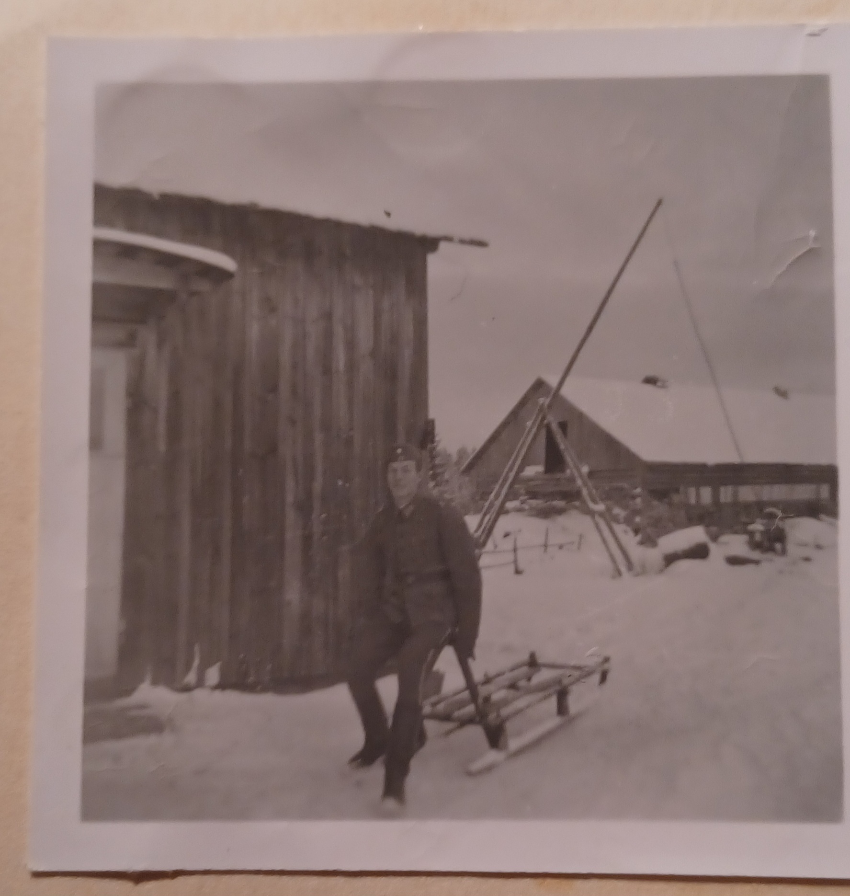
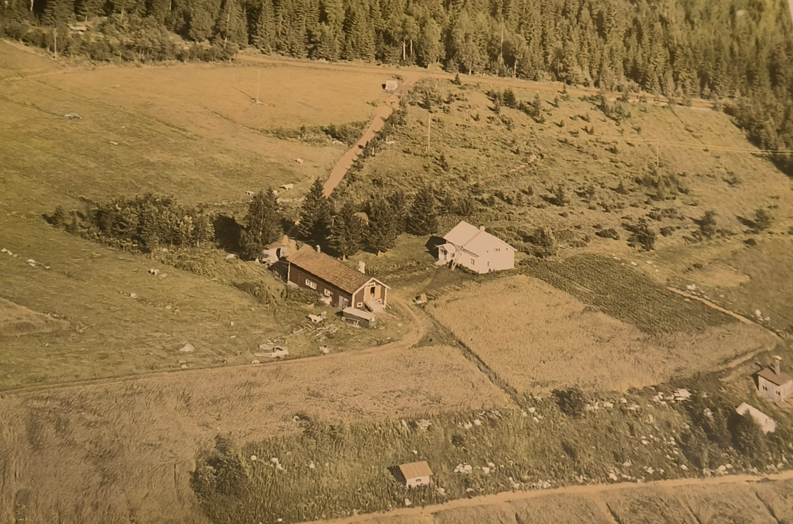
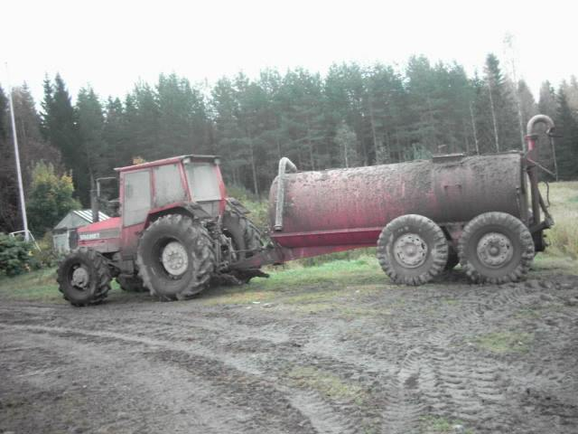

Tilamme historiaa
Tilamme historia ulottuu 80 vuoden päähän, vuoteen 1945. Ensimmäiset Okkolat saapuivat Maaningalle, kun Etelä-Karjalassa sijainnut Parikkala jäi rajan toiselle puolelle.
Okkolan veljekset Oskari ja Urho ostivat ensimmäisen tilansa Juvolan vuonna 1944, mutta pääsivät muuttamaan tilalle vasta helmikuussa 1945.
Myöhemmin Oskari ja hänen poikansa Vesa ostivat Juvolan tilaa ympäröiviä alueita Oravin ja Pihlajan. Kuusikymmentäluvun alussa Vesa osti Oraviharjun tilan perheelleen.
Oraviharjun tilalla asumme nykyään.
Metsätiloja on ostettu lisää ajan saatossa, viimeisin vuonna 2023.


